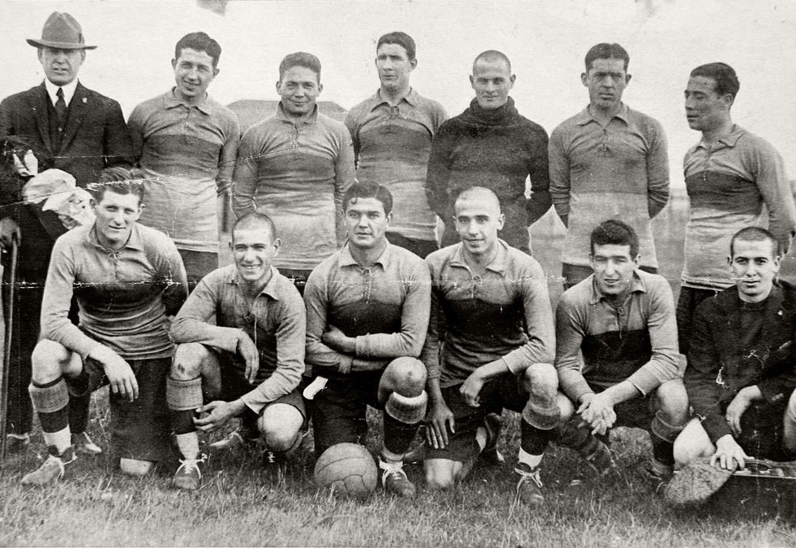

Nacimiento

Lo que hicieron Esteban Baglietto, Alfredo Scarpatti, Santiago Sana y los hermanos Teodoro y Juan Antonio Farenga aquel 3 de abril de 1905 no fue muy distinto a lo que por entonces hacían otros grupos de amigos por el resto de la Argentina para canalizar un incontenible fervor popular por el fútbol.
Fundaban un club de fútbol. La particularidad del caso fue que, sin saberlo, estaban creando el más grande de la Argentina. Uno que se volvería pasión de multitudes y también un gigante mundial. Como la reunión en la casa de Baglietto fue interrumpida por inoportunas visitas, la ceremonia de fundación siguió al aire libre, en un banco de la Plaza Solís, y allí se fijó el nombre, tomado prestado del barrio, más ese Juniors que le daba un toque de prestigio inglés tan acorde con la época. Baglietto fue designado presidente. Y el 21 de abril de 1905, en el campo de juego de Independencia Sud, goleó 4-0 a Mariano Moreno en el primer partido de la historia. Un presagio de los tiempos por venir.
Gira Europea
Boca ya era una pasión de multitudes por aquellos años de glorias, el germen xeneize ya se había propagado por el interior del país, pero en 1925 daría el salto internacional.
La gira por Europa, en una época donde desplazar un grupo de futbolistas era atípico e inusual, marcó un hito. El plantel, compuesto por 12 jugadores propios y 5 invitados, se embarcó un 5 de febrero en Montevideo y llegó 22 días después a Vigo, con un único acompañante que se pagó el pasaje de su bolsillo como Victorio "Toto" Caffarena y que, además de hacer de masajista y utilero, dio inicio a la leyenda del Jugador Número 12. Fueron 19 partidos, con 15 triunfos, un empate y apenas tres derrotas, con 40 goles a favor y 16 en contra, que conmovieron allá y acá y sentaron las bases de los éxitos internacionales que vendrían muchos años más tarde. Tal fue el reconocimiento internacional y el fervor popular que despertó la gira que, cuando los jugadores bajaron del barco el 12 de julio, la Asociación Argentina de Football decidió consagrar a aquel equipo como campeón de Honor de la temporada 1925. Boca ya era un grande para el mundo entero.
La Bombonera
1940: esta temporada dejó dos excelentes noticias para el mundo Boca: la inauguración de la Bombonera y la conquista de un nuevo título.
Atrás quedaba el peregrinaje de los primeros años y la modesta cancha con tribunas de madera en su sitio definitivo de Brandsen, Del Valle Iberlucea, Aristóbulo Del Valle y las vías del Ferrocarril Sud. A la religión xeneize le faltaba su templo y ése llegó en 1940. La Bombonera, un sueño titánico que llevó adelante la CD encabezada por el Dr. Camilo Cichero, se inauguró el 25 de mayo con un 2-0 sobre San Lorenzo en un amistoso y fue una inyección clave para Boca, que ganó los 13 encuentros que disputó allí para consagrarse campeón. Nacía una leyenda mundial que en 1952 agregaría una tercera bandera y la iluminación y en 1996 sumaría los palcos VIP. Ya era, a esa altura, un monumento del fútbol, de fama mundial, y cita obligada para turistas y fanáticos de cualquier latitud.
Angel Clemente Rojas
La tarde del 19 de mayo de 1963 quedará marcada a fuego por los hinchas de Boca. En la Bombonera, y ante Vélez, se produjo el debut de Angel Clemente Rojas, un crack que dejó su sello por su juego desfachatado, su cintura prodigiosa y su habilidad sin igual.
Con los partidos, y los goles, y las gambetas, el pibe se ganó para siempre el apodo por el diminutivo de su apellido y se convirtió en uno de los ídolos más grandes del club. En 1970 le hizo un gol a Central para ser campeón del Nacional y al año siguiente emigró al exterior. El increíble Rojitas obtuvo cinco títulos y dejó una marca imborrable en la memoria del hincha de Boca.
Juan Carlos Lorenzo
Cuando Juan Carlos Lorenzo llegó en 1976 y dio los nombres que quería como refuerzos todo el mundo lo miró extrañado.
El Loco Hugo Gatti, Francisco Sá, Rubén Suñé, Carlos Veglio y Mastrángelo ya tenían un largo recorrido en el fútbol, pero el tiempo le dio la razón al Toto al sumar tantos experimentados.
Entre las brumas y el frío de aquella noche de mágica del 14 de septiembre de 1977 en Montevideo, en el mítico Centenario que albergó el primer Mundial, nació la leyenda copera de Boca.
El Loco Gatti voló hacia su izquierda, rechazó el penal de Vanderley y Boca se consagró campeón de América por primera vez en su historia. Fue ante el Cruzeiro de Brasil, después de un triunfo por 1-0 para cada uno de local, y de ese tercer partido que fue 0-0 y en los penales concretó un sueño que se postergaba desde aquella final perdida ante el Santos de Pelé en 1963. Boca dejó en el camino a River, Defensor, Peñarol, Libertad y Deportivo Cali. Llegó invicto a la final ante el temible Cruzeiro, el último campeón, que tenía varios jugadores de la Selección. En la Bombonera, fue 1-0 para Boca con gol de Carlos Veglio, pero tras la derrota en Belo Horizonte hubo que llegar al tercer juego, que Boca jugó con camiseta blanca, y que consagró a Gatti como ídolo eterno en aquel décimo penal. Era la primera estrella internacional. Vendrían muchas más.
Diego Armando Maradona
Boca rompió el mercado de pases con la contratación de ese crack de Argentinos que ya insinuaba un futuro inmenso y que, además de confesarse hincha de Boca, ya conocía la gloria de ser campeón con el Juvenil en 1979.
la llegada de Diego se sumó la de Miguel Brindisi decisivo para lograr el torneo Metropolitano. Boca ganó 20 partidos, empató 10 y perdió tan sólo cuatro. Y en el medio, en una lluviosa noche del 10 de abril, aplastó 3-0 a River con Maradona como figura principal y un gol inolvidable a Fillol. Aquel título significó el comienzo de la relación entre Boca y Diego. Luego, sería vendido al Barcelona y volvería 14 años después...
Juan Roman Riquelme
La tarde del 10 de noviembre de 1996, con un 2-0 a Unión en la Bombonera, marcó el estreno de Juan Román Riquelme con la azul y oro.
Ese chico con tanta timidez como pecas se convertiría, con los años, en una leyenda. Tan determinante que le quitó el récord a Silvio Marzolini y se transformó en el futbolista con más partidos en la Bombonera. O en el patio de su casa, como le gusta denominar al estadio en el que fue protagonista de grandes hazañas. Los primeros títulos con Carlos Bianchi, las Copa Libertadores, la final contra Real Madrid en Tokio, los superclásicos, los goles, las miles de asistencias… Riquelme es sinónimo de Boca. “Nací bostero y voy a morir bostero”, repite a menudo. Nadie lo duda.
Carlos Bianchi
Luego de seis años sin éxitos oficiales, Boca pudo festejar de la mano de Carlos Bianchi. En julio de 1998 comenzó el mejor ciclo de la historia y el Virrey se transformó en el entrenador más ganador del club.
En su primer campeonato armó un equipo demoledor y arrasó con el título de manera invicta (13 triunfos y 6 empates). El Virrey potenció a Riquelme y le dio rodaje a una dupla histórica formada por Guillermo y Palermo, que convirtió 20 goles en aquel Apertura 98 y fue todo un récord en torneos cortos. Ese equipo implacable, demoledor, que parecía invulnerable, realmente lo fue ya que estuvo 40 partidos sin perder y, con la repetición en el Clausura 99, sumó otro bicampeonato. Bianchi iniciaba así su camino a la inmortalidad.
Martín Palermo
La historia de amor y goles empezó en 1997 y se terminó un 18/6/2011 en la cancha de Gimnasia y Esgrima La Plata.
Allí Martín Palermo se despidió oficialmente del fútbol y le dijo adiós a una carrera emblemática y que quedó grabada a fuego en la retina de los hinchas. Con 236 goles en 404 partidos disputados, el Titán se transformó en el máximo goleador de la historia de Boca. Luego de su salida, en el segundo semestre del año, el conjunto de Falcioni gestó su camino al título invicto con 11 puntos de ventaja sobre el escolta. Una campaña impecable que incluyó 12 victorias y siete empates. En el cierre del año, el club tuvo novedades en el ámbito institucional: en las elecciones que se celebraron el 4/2, y con un récord de casi 25.000 votantes, Daniel Angelici se erigió en nuevo presidente de la institución para darle continuidad a un proyecto de moderna gestión.
Fútbol Femenino
El 8 de diciembre, al cabo de una elección sin precedentes en la historia del fútbol argentino, Jorge Amor Ameal, Mario Pergolini y Juan Román Riquelme asumen la conducción del club por el período 2019-23. El 2019 se recordará por el comienzo de la primera Superliga femenina profesional. En el debut, las Gladiadoras golean 5-0 a River en la Bombonera.